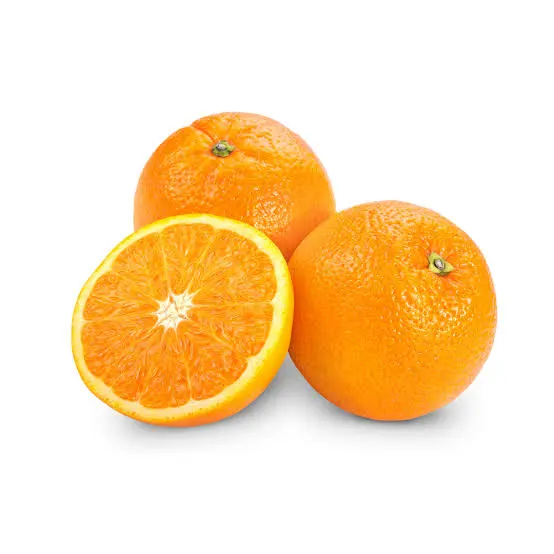

O retorno de Tieta abalou a rotina da pacata cidade. Tieta retorna rica e poderosa, viúva de um industrial paulista. Ela chega acompanhada de Leonora, moça bela e triste, que apresenta como sua enteada. Tieta é recebida com toda a pompa na cidade perdida no mapa e no tempo. A presença de Tieta transforma a vida do pacato vilarejo e de seus tipos folclóricos: o prefeito enlouquecido Mauritônio, o poeta Barbosinha, o comandante Dário. Tieta tem uma tórrida relação com Cardo, o sobrinho seminarista filho da austera Perpétua. Por sua generosidade Tieta se transforma na grande benfeitora de Sant Ana do Agreste. Um segredo da vida de Tieta é revelado – ela obrigada a partir em circunstâncias totalmente inesperadas. Mas Sant Ana do Agreste e seus habitantes nunca mais serão os mesmos.
Nos meus anos mais jovens e vulneráveis, meu pai deu alguns conselhos que povoam a minha mente desde então. 'Sempre que você quiser criticar alguém', – disse ele -, 'lembre-se que todas as pessoas neste mundo não tiveram as vantagens que você teve.
O homem não foi feito para a derrota – disse em voz alta. – Um homem pode ser destruído, mas nunca derrotado.
The man was not made for defeat – he said aloud.
A man can be destroyed but not defeated.
